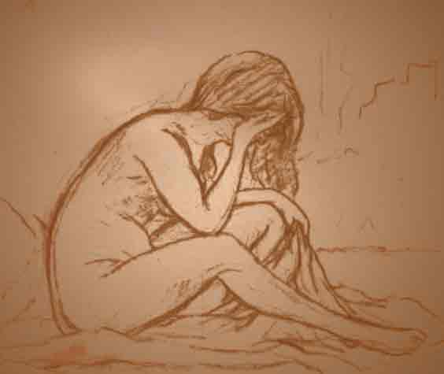
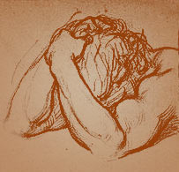

El dolor es real:
dolor emocional = dolor físico
El primer paso es darse cuenta de que el dolor que sientes es real. No está sólo "en tu mente". El dolor que se siente al ser rechazado es traumático, es igual de fuerte que cualquier dolor físico que puedas recibir. De hecho, el dolor del rechazo activa muchas de las mismas áreas del cerebro que las del dolor físico.
Ha habido varios estudios basados en imágenes por resonancia magnética en la última década que muestran que las áreas del cerebro que se activan cuando te rechazan son las mismas que cuando se sufre dolor físico grave, como ser quemado o golpeado violentamente. Cuanto más fuerte es el rechazo, peor es el dolor que siente. Y nada puede amortiguar el dolor: esas áreas del cerebro se activan por el rechazo, incluso si tienes alguna recompensa (estar libre de tu ex, una nueva pareja, dinero) o incluso si ni siquiera te gustaba la persona que te ha rechazado.
[Si te interesa leer la investigación científica, un buen lugar para comenzar son con los trabajos de Ethan Kross de la Universidad de Michigan y Edward Smith de la Universidad de Columbia ("Social rejection shares somatosensory representations with physical pain"), y de Naomi Eisenberger de la UCLA ("The pain of social disconnection: examining the shared neural underpinnings of physical and social pain")].
Los humanos evolucionaron para creer que el rechazo lleva a la muerte
La teoría detrás del dolor del rechazo social, es que a través de la historia antigua, los humanos evolucionaron para confiar en su grupo social, para cubrir sus necesidades básicas: comida, agua, refugio, apoyo, protección.
Uno necesitaba de su grupo social, tribu, familia, para sobrevivir, uno no podría sobrevivir por sí mismo. El rechazo social destruye la estabilidad y forma de vida, literalmente, podría haber sido una sentencia de muerte durante millones de años de la vida humana. Así que el dolor del rechazo es la forma en que el cerebro te dice que estás en grave peligro si estás solo y que necesitas volver a ser aceptado con el fin de sobrevivir.
Obviamente ya no es el caso que, literalmente, vas a morir de hambre o de sed si te dejaron en una relación romántica. Pero el cerebro humano todavía reacciona de esa manera. Y tiene consecuencias muy profundas sobre la forma en que reaccionamos ante el rechazo.
Todo el mundo reacciona de manera diferente, pero hay algunos efectos muy comunes que se registran todo el tiempo en las historias de los que han sido dejados:
La abrumadora necesidad de volver con la persona que te rechazó.
Tu cerebro te está diciendo que no hay esperanzas en la vida a menos que seas aceptado de vuelta por la persona que te dejó. No importa lo maravillosa que sea tu vida y qué otras cosas importantes estén a tu alrededor, porque no puedes verlas. Todo lo que puedes ver y sentir es el dolor del rechazo y la necesidad de volver con esa persona. Sientes que tu vida ha terminado si no estás con esa persona. No es racional, no tiene sentido, pero tu cerebro te hace sentir de esta manera.
Las funciones del cuerpo están hechas un lío.
No puedes dormir más de una hora o dos por vez, y en otras ocasiones no puedes hacer otra cosa más que dormir durante días seguidos. No puedes comer nada durante días, y luego no puedes dejar de comer a medida que vas encontrando satisfacción en las calorías. No puedes moverte en absoluto durante mucho tiempo, te sientes tan letárgico, completamente dormido y sin energía, pero otras veces estás tan ansioso, nervioso y estresado que no puedes dejar de moverte.
Te vuelves obsesivo/a y solo piensas en tu ex.
Literalmente, cada segundo de cada hora de cada día, solo piensas en tu ex. No importa lo que estás haciendo, con quién estás hablando, lo único que sucede en tu cabeza que realmente te importa es no dejar de pensar en tu ex.Cualquier cosa, todo y nada te recuerda a tú ex y la relación. Y cuando encuentras a alguien que esté dispuesto a escuchar tu monologo interno sobre el ex, se siente bien... porque al hablarlo al menos se siente que estás haciendo algo para seguir conectado/a a tu ex y mantener el recuerdo vivo.
Los sentimientos van y vienen en oleadas.
Por momentos estás tan triste que lloras incontrolablemente durante mucho tiempo, luego te sientes completamente entumecido y sin emociones. A veces estás lleno de ira y rabia hacia tu ex, contigo mismo/a y el mundo entero, y otras estás con la explosión más pura de amor incondicional hacia la persona que te rompió el corazón.
Odias estar solo/a pero no disfrutas de tus momentos en compañía.
Por momentos no te molestarías siquiera en mirar a alguien, mientras que en otros te conviertes en una versión malvada de ti mismo/a gritando e impacientándote violentamente con tus familiares y amigos. Quieres hablar todo el tiempo de tu ex, de la relación y de la ruptura. Pero te enojas con todos, no soportas estar con otras personas. Nadie te da la sensación, que estás convencido/a, que necesitas y que incluso estás más convencido/a que sólo puede venir de tu ex.
Pérdida del sentido de la vida.
Cuestionas la vida en general y principalmente la tuya. No entiendes el sentido de la vida. Nada tiene sentido.
Caes en las profundidades de la desesperación y la angustia existencial. Te quejas de que no hay razones para hacer alguna cosa. En muchos casos, caes en una gran depresión y contemplas seriamente el suicidio, ya que simplemente no puedes comprender la razón de tu vida sin tu ex.
Todas estas reacciones son normales. Mira el lado bueno: esto confirma que en realidad estás vivo y que eres humano ;)
Todos sufrimos igual: los hombres, las mujeres, los heterosexuales, los homosexuales
Una nota para los hombres: el dolor es tan malo para los hombres como para las mujeres. Debido a los estereotipos sociales y los roles de género tradicionales, el dolor de la ruptura está más asociado con las mujeres. Los hombres son supuestamente fuertes, duros, no emocionales, y no se ven tan afectados. "Sé un hombre al respecto: ve al gimnasio, toma unas cervezas, acuéstate con unas chicas y todo estará bien", es el consejo estándar.
Pero eso es una tontería. Los hombres sufren igual cuando son rechazados, como se demuestra en la investigación científica, así como, incluso, una lectura rápida a través de los foros.

Y, por desgracia, los hombres suelen tener menos apoyo de amigos y familiares, precisamente a causa de los estereotipos de género.
Todo aquí se aplica igualmente a los hombres como a las mujeres.
Cabe destacar que todo lo expuesto aquí se aplica igualmente a las relaciones entre personas del mismo sexo y las relaciones de distinto sexo. El dolor de ser rechazado no conoce límites basados en género u orientación.
El rechazo duele no importa quién seas.